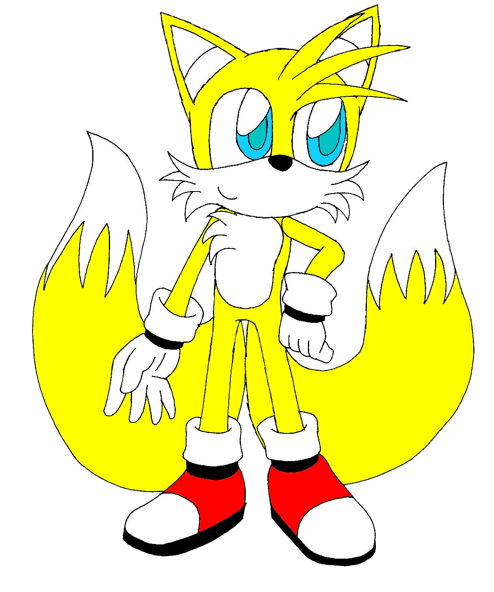
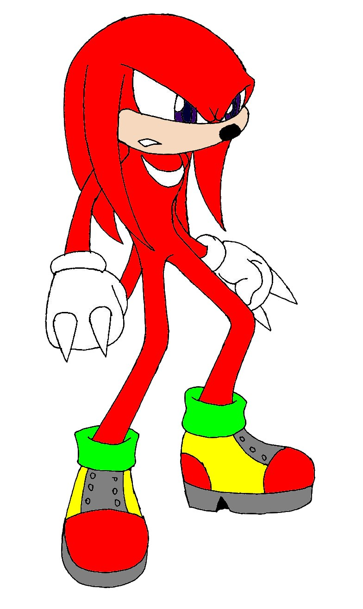
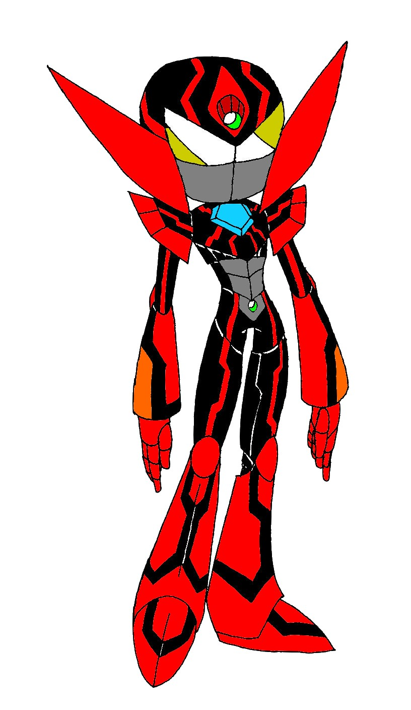
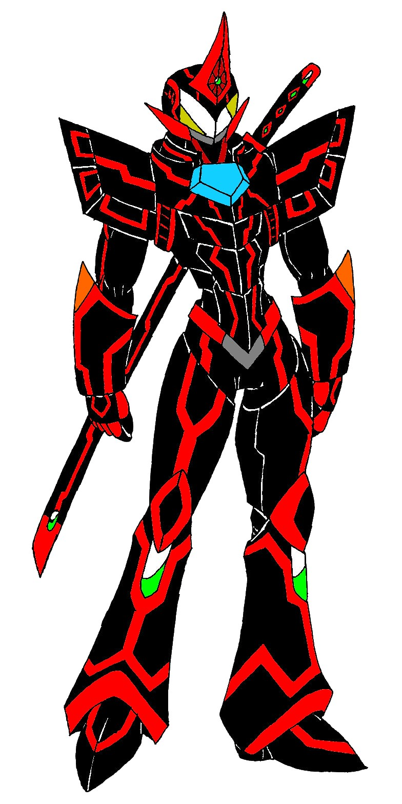
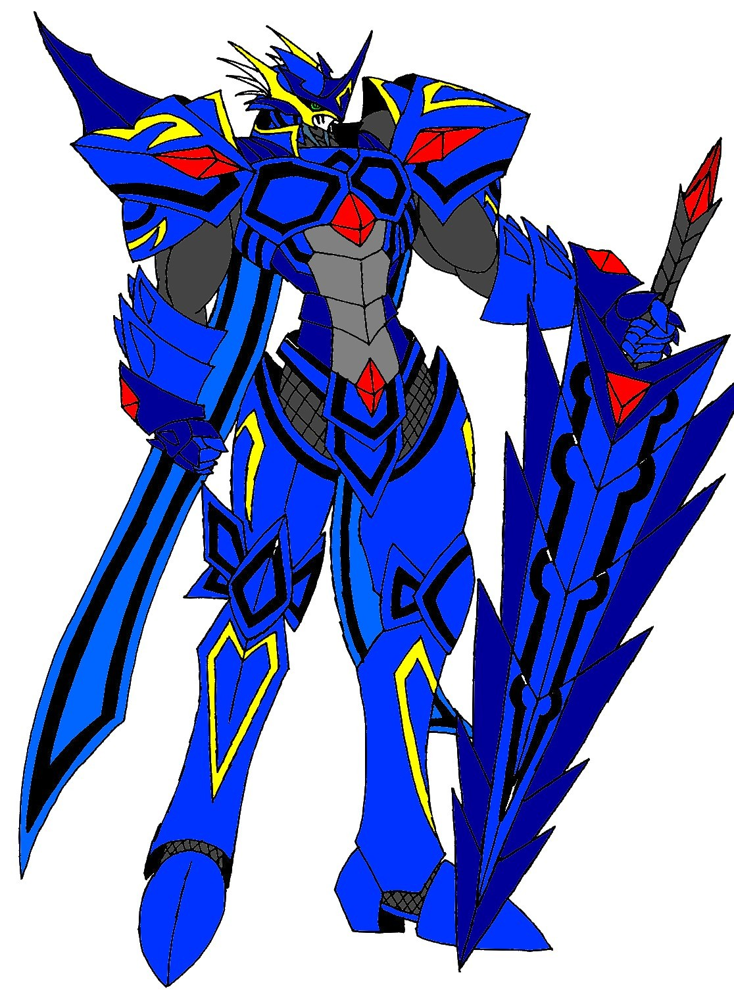

附件: TAILS.jpg
TAILS
身為SONIC的跟班為了幫助SONIC也加入幫CIVIC奪回次元魔方的行動...

附件: KNUCKLES.jpg
KNUCKLES
身為MASTER EMERALD的守護者絕對不會讓SETTLER CONQUEROR奪走MASTER EMERALD所以與VARIATION聯手對付SETTLER CONQUEROR...

附件: VARIATION.jpg
蔓生變異體\"VARIATION\"
用SETTLER的真名作實驗發生了意外時因為SETTLER的真名的力量下誕生的不明生命體...
具有能切割任何空間與任何物體的力量....
(之前忘了介紹所以在這補完)

附件: VARIATION第二型態.jpg
VARIATION第二型態
吸收了MASTER EMERALD的力量之後轉型為第二階段而成為能與SETTLER CONQUEROR匹敵的對手...

附件: SETTLER CONQUEROR.jpg
SETTLER CONQUEROR
原本是屬於跟CIVIC同一個世界的不明戰士自從次元魔方CIVIC奪走後就以著個模式維持自身的力量後來在Dr.EGGMAN對他的次元魔方作實驗時發生了意外讓他知道CIVIC目前在在SONIC的世界所以前往奪回曾經屬於他的次元魔方同時也搶了KNUCKLES的MASTER EMERALD來增強他的力量但是...
現在他更想做的事就是殺了搶了次元魔方而且還讓他在另一個世界失去原本勢力的CIVIC...
目前就先貼這這嚕...
下一篇大概就是最終戰了一 一
[附件 898 未找到]CIVIC&SONIC